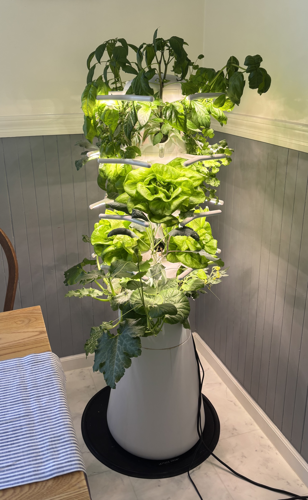
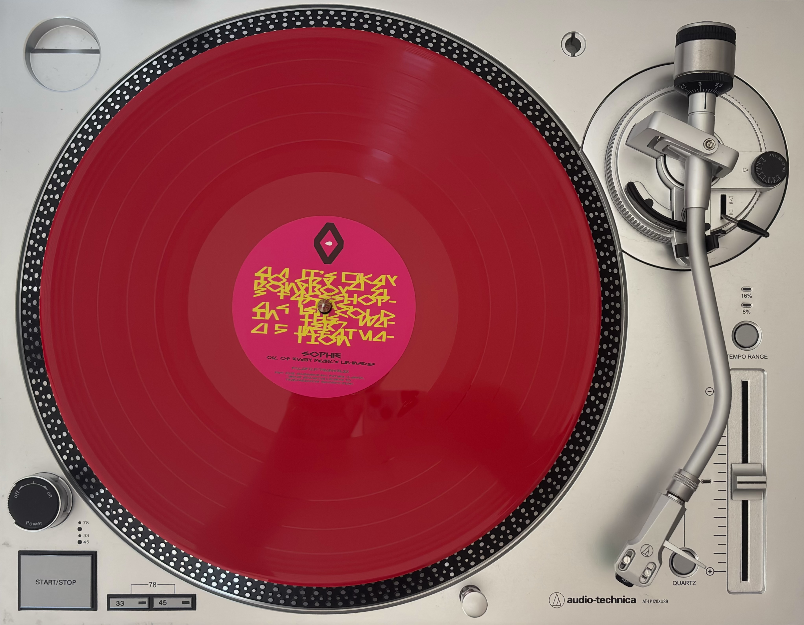
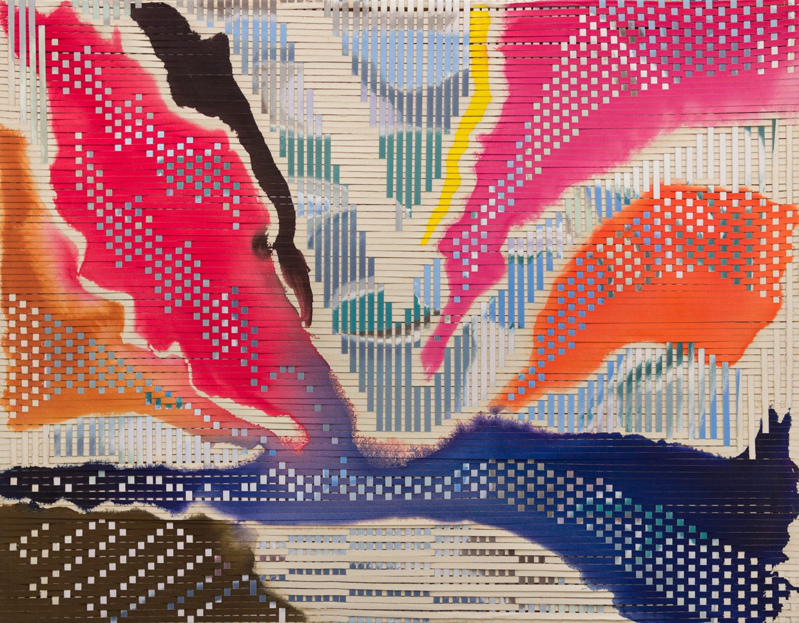
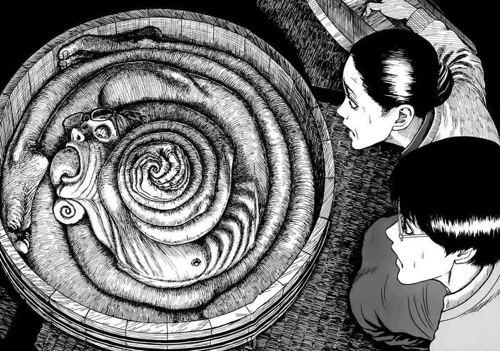
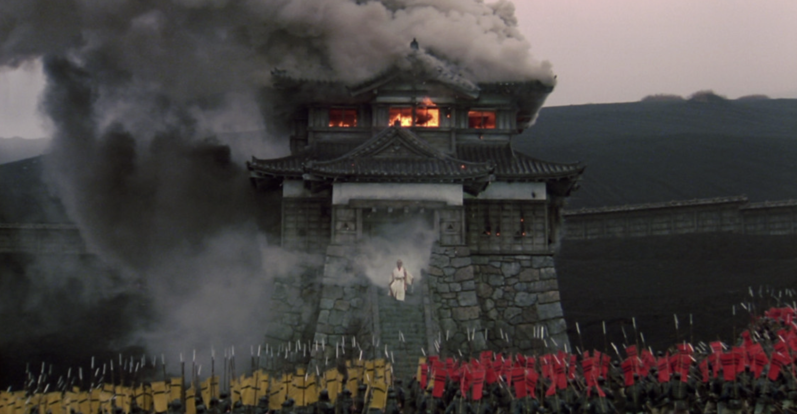

Article
An Act of Cosmic Sabotage - Ross Andersen
-tie it back to my Bachelor’s thesis ml model for mars salts
Monthly review and reflections
January 31, 2026
This recipe was very quick, easy and hearty. I was looking for something that used aubergines, as I had a huge harvest of them from my hydroponic tower.

When I got a record player a few years ago, this was one of the first albums I bought, and I still come back to it often. The whole album feels ahead of its time, but it still balances a certain ancient, human quality. Lately I’ve been listening a lot to “Is It Cold in the Water?”, and depending on where and how I hear it, it becomes a completely different experience. On vinyl it sounds eerie, sad, and lonely, like an old god being forced to adapt to the times. But when I’m walking somewhere with headphones, it transforms into a story about seeking growth and taking the plunge, pushing through apprehension, and moving past the inertia that stems from fearing change.
This month especially, I’ve enjoyed returning to it because it keeps circling themes of consciousness and the relationship between the physical body, the mind, and the spirit, which are themes I’ve been exploring through other media and writing. A new year brings new challenges and unfamiliar territory, and this album understands both the pain and the euphoria of becoming someone new.

-tie it back to my Bachelor’s thesis ml model for mars salts
I saw this piece during my recent visit to the de Young Museum and I was drawn to the texture the artist creates by weaving strips of canvas together. The technique is inspired by Bolivian weaving, and it gives the work a very tactile, lively feel. I also love that it’s so personal: the piece celebrates the artist’s daughter, who’s named after Inti, the Quechua sun god.

I visited the Manga exhibition at the de Young this month, and it inspired me to return to reading Junji Ito’s Uzumaki. Uzumaki is a horror manga about spirals. You may think, spirals? What’s scary about spirals? But let me assure you, Junji Ito can do some pretty twisted things with the motifs of transformation and spirals. He manages to translate a sense of doom and rising tension about something that shouldn’t be horrifying. Plus the art is just so cool.

photo credit - https://www.yokogaomag.com/editorial/junji-ito-horror
Image credit: https://moviemezzanine.com/remembering-takao-saito-and-the-castle-attack-in-akira-kurosawas-ran/When I think of new years and new beginnings, a strong memory I have is of watching the sunrise at 4am over Angkor Wat, stumbling over jagged edges in the dark, disoriented on three hours of sleep while solo travelling. I went to Siem Reap in January 2020 and stayed with Sophat, a tuk-tuk driver and Airbnb host who rented out one of the rooms in his family home to me. I ate some incredible fruit on that trip.
The whole experience has a haze to it in my memory, probably because that first day I was so sleep-deprived that everything felt slow and slightly unreal. I’ve always been attracted to places of religion, because they often hold the history and power of a community, and they’re monuments to art and divinity. Angkor Wat is next level: the sheer size of it is impressive on its own. But what I find most special is the way nature has started reclaiming it and reintegrating it into the environment. Roots push the stones apart (tripping hazard, beware), and huge trees break through, or sometimes even support, the structures. It’s in a unique flux of balancing destruction and preservation.
Image credit: https://insidethemagic.net/2011/09/disney-imagineers-use-amazing-destini-to-further-audio-animatronics-research-at-2011-d23-expo/